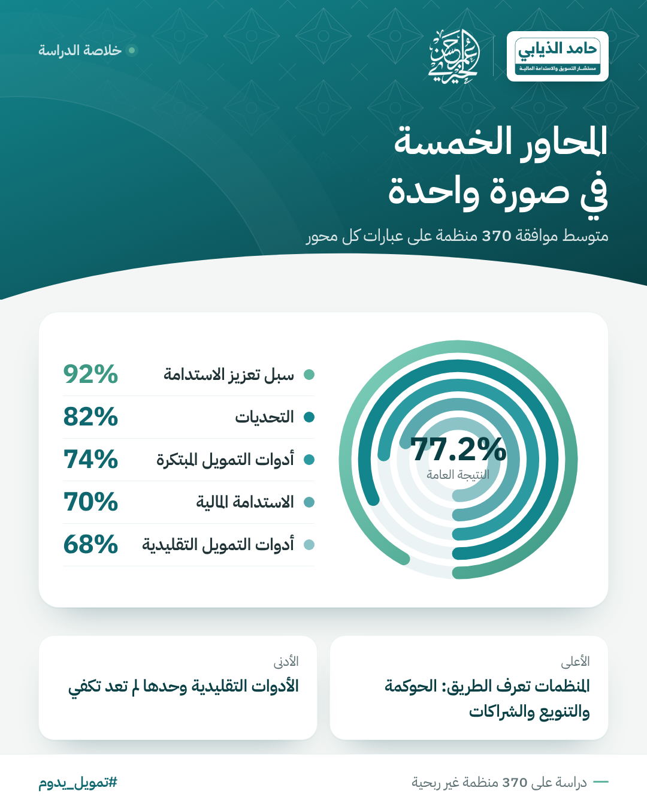

تعتمد معظم الجمعيات في المملكة على التبرعات والمنح، وهي مصادر مهمة لكنها موسمية ومتقلبة. ومن هنا انطلقت الدراسة لتسأل 370 منظمة غير ربحية في 13 منطقة عن واقع تمويلها، وعن استعدادها للانتقال إلى أدوات تمويل أحدث تمنحها استقرارًا أطول.
وحللت الدراسة هذا الواقع عبر خمسة محاور: الاستدامة المالية، وأدوات التمويل التقليدية، وأدوات التمويل المبتكرة، والتحديات، وسبل تعزيز الاستدامة.
الخلاصة في رقم واحد
بلغت النتيجة العامة لمحاور الدراسة الخمسة 77.2%، وهو متوسط موافقة المنظمات على عبارات كل محور.
أدوات التمويل المبتكرة74%
أدوات التمويل التقليدية68%
القراءة: المنظمات تعرف الطريق جيدًا؛ فأعلى المحاور «سبل تعزيز الاستدامة» بالحوكمة والتنويع والشراكات، وأدناها «الأدوات التقليدية» التي لم تعد تكفي وحدها. والمطلوب تمكين مؤسسي يحوّل هذا الوعي إلى ممارسة.
